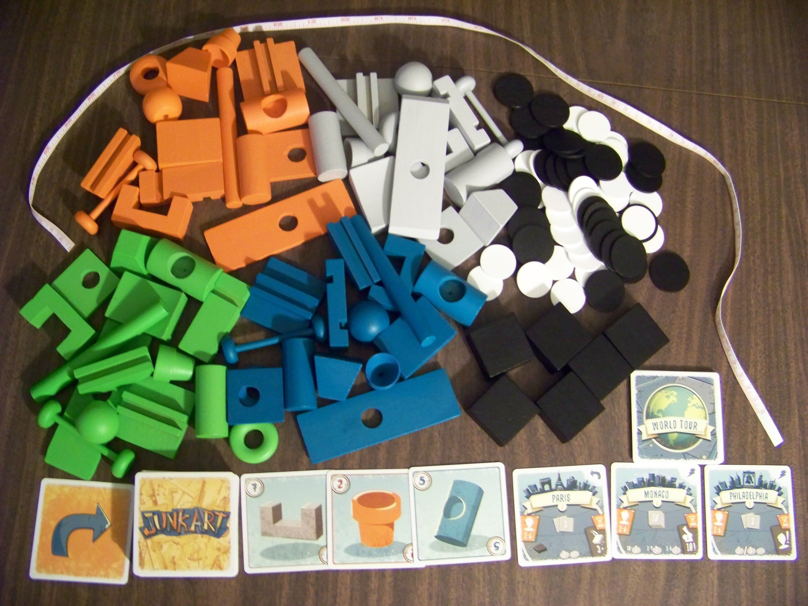
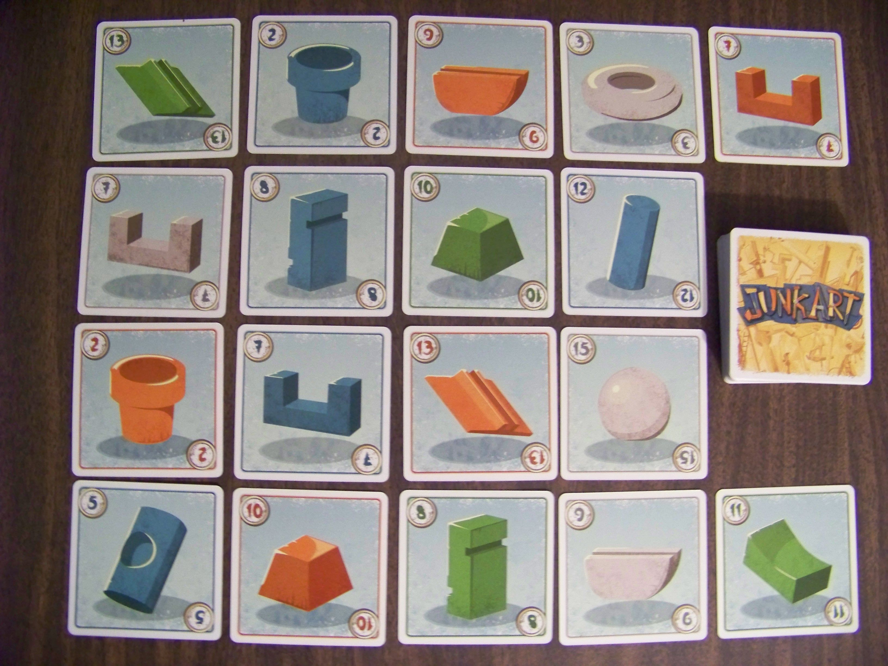
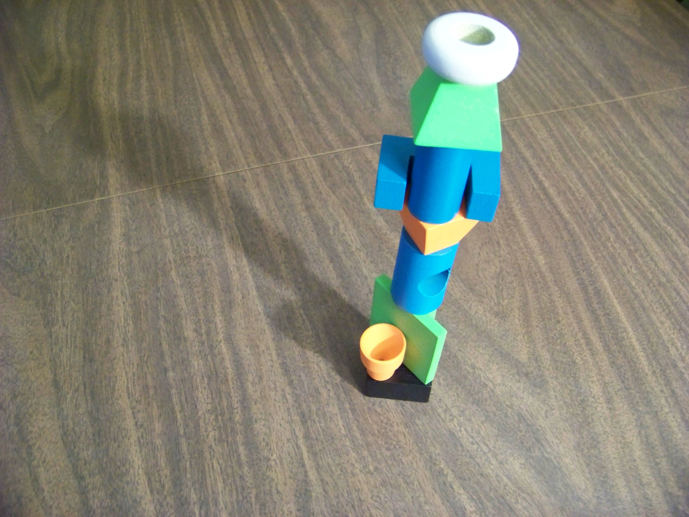
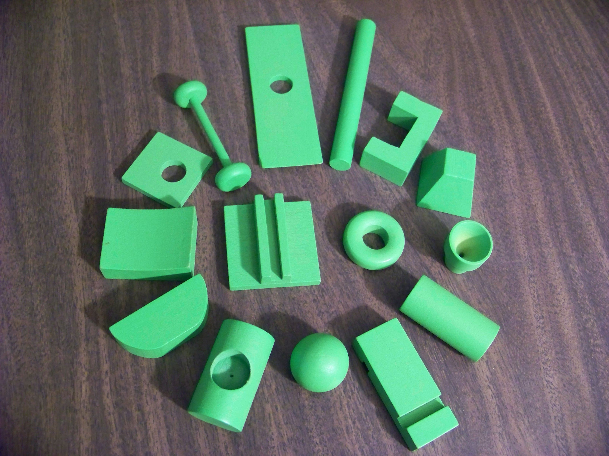
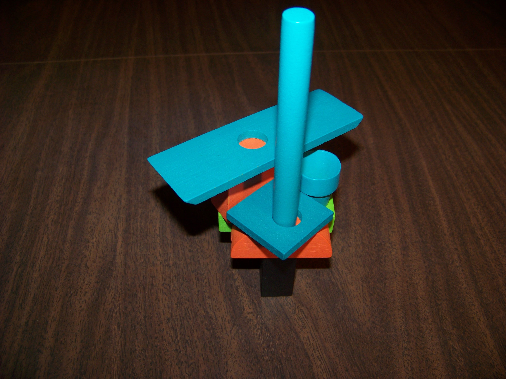

One Year Retrospective

Celebrating a year of partyhatpotato.com
12/18/2017
This jagged, unstable structure is sure to please the critics.
Posted on 1/15/2018 by Tim Rice
Great dexterity games are a bit hard to come by, and that’s a shame because it’s one of my favorite genres. Their goofy, quick, and imprecise nature often make them perfect fillers, and they frequently showcase a lot of what I love about the board gaming medium. When you think about all the board game apps out there that work just as well as the original game (if not better), it’s nice to experience a truly physical design every once in a while.
Therefore, when I first heard about Junk Art, I knew I had to try it. It is a modern dexterity game about building strange-looking towers out of a bunch of random junk. As for the art part...maybe if you’re talented you can create something mildly impressive...but it’s more likely you’ll spend most of the time praying that your tower doesn’t collapse.
In the box you’ll find 60 junk pieces (15 of each color) with corresponding cards for each one, 6 bases, 60 fan tokens, 15 city cards, a few other special cards, and a tape measure.
To set up, each player takes a base, the junk cards are shuffled, and all other components are placed within easy reach of all players. Then it’s time to decide which city cards to play with.
Each city card describes a different way to play Junk Art, so each game is made up of a sequence of "mini-games" that each have slightly different rules. Before each game, the players choose (randomly or not) which cities they will play (3 is the default number of cities). The idea is that you are exhibiting your art on a world tour, attempting to pick up fans in each city along the way.
Of course, all of these mini-games involve stacking the junk pieces on top of a base, and there are some universal rules which apply to all cities:
As for city-specific rules, I won’t go over all of them, but here are a few examples:
A lot of dexterity games have fairly one-dimensional designs and instead focus on some sort of gimmick, but Junk Art breaks that trend. Yes, building crazy towers and watching them fall is still the main draw, but they actually put a lot of effort into the mechanics to ensure that it would be replayable.
One of the best things about this design is that there are a bunch of different ways to play. A lot of dexterity games are a bit repetitive, but this one keeps things fresh by including so many different mini-games to try. Not all of them are equally fun, and some are a bit too complicated for their own good, but you’ll almost certainly find a few that you like enough to play multiple times.
Most of the games are very quick and simple, but they do have light strategy elements as well, so there’s at least something to think about besides where to place your piece. Oftentimes, another player gets to choose which piece you have to place next, so by design the pieces almost never fit together very well.
Those moments where you have a ridiculously unstable tower and have to place another piece that seems impossible are where this game really shines. Sometimes the pieces fit together in unexpected ways, so impressive feats of balance are quite common. Even when you think there’s no possible way for another piece to fit, there is usually something crazy you can do to make it work.
There are a few annoying things about the game too. For example, if you make a mistake early in a round and get eliminated, it can be quite a while before you get to play again. Also, even though the city card system adds replayability, it also means that you’ll have to reference the rulebook a lot. Much more often than a typical game of this weight. Not all cities are worth the same amount of points either, so it can create situations where there are rounds that don’t matter at all to the outcome of the game (if you’re the type of player who cares about winning/balance in a game like this).
All in all though, this design has a lot of things going for it. It’s easy to learn, it works well at all player counts, it’s unique and interactive, and it’s memorable. There is a lot of great content to explore here, especially for a dexterity game.
The stars of the show, of course, are the 60 assorted junk pieces. There’s a large variety of shapes here to choose from, and they actually did put some thought into how they all might fit together. By the end of some rounds, the structures actually do end up looking like unique pieces of abstract art, which is pretty cool. You’ll almost certainly never build the same structure twice.
In the version I have, all the components are made out of wood, and I love the way they look and feel (it reminds me of classic toys). There is also a plastic version which I haven’t played but I’ve heard works just as well (for a cheaper price).
As for the secondary components, they’re all passable. The art on the cards is functional and nice-looking, but nothing super impressive. I also kind of wish they had put more effort into the fan tokens instead of just including black and white discs, but they fulfill their purpose.
One of the strangest things about this game is the box. It’s a small wooden crate with a lid that slides out horizontally, and the whole thing slips into a regular cardboard box-bottom (which you could probably just throw away if you wanted to...). It makes it a bit awkward to pack and unpack, but I suppose it gives it some character, and it’s sturdy.
Luckily, they got the most important parts of the presentation right. The junk pieces are durable and functional, and it never feels like your tower fell because of component malfunctions. I do wish the theme of showcasing art had come out a bit more, because that’s a cool idea, but most people aren’t going to need a reason to build giant towers anyway.
Junk Art is more than just a great game, it’s also a great toy. If you ever enjoyed stacking blocks and building towers as a child (and watching them fall down, of course) this game gives you that same child-like satisfaction. That being said, you don’t have to be a child to get a kick out of it.
This is a game I can pull out with almost any group for a guaranteed fun and silly time. It’s also got an impressive amount of variety for a dexterity game, it takes multiple plays to experience everything this game has to offer. I’d recommend it to anyone looking for a unique and light-hearted title for their next game night.


Thanks for reading!